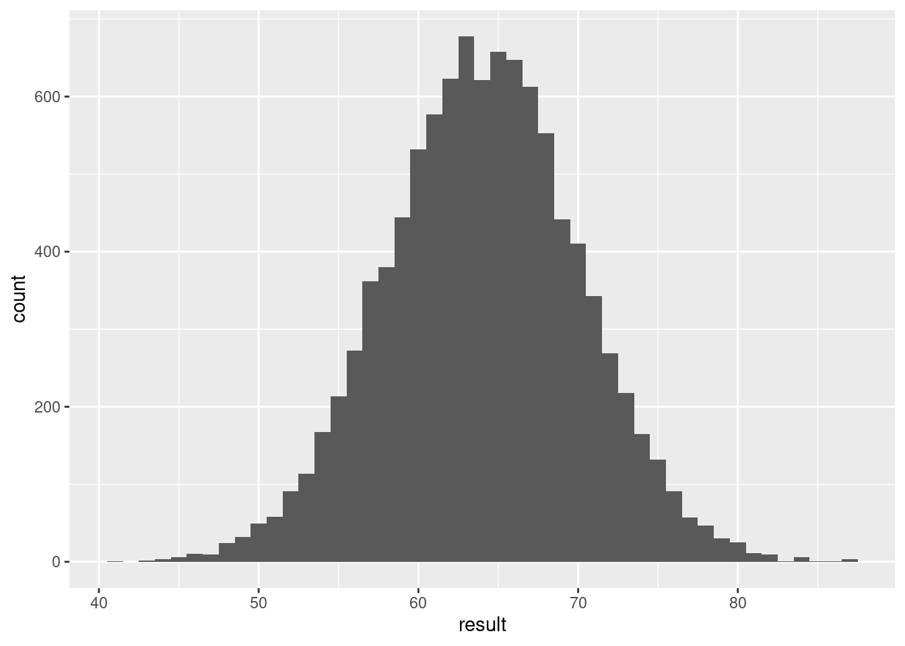
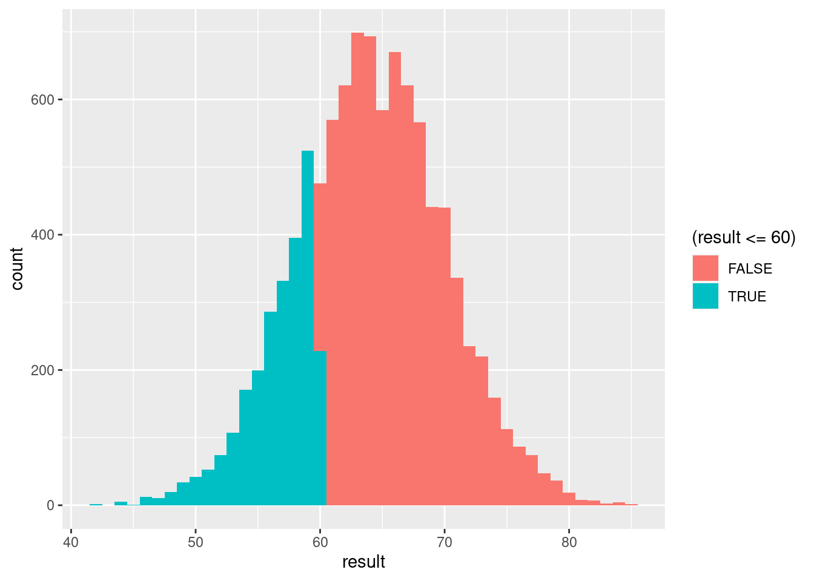
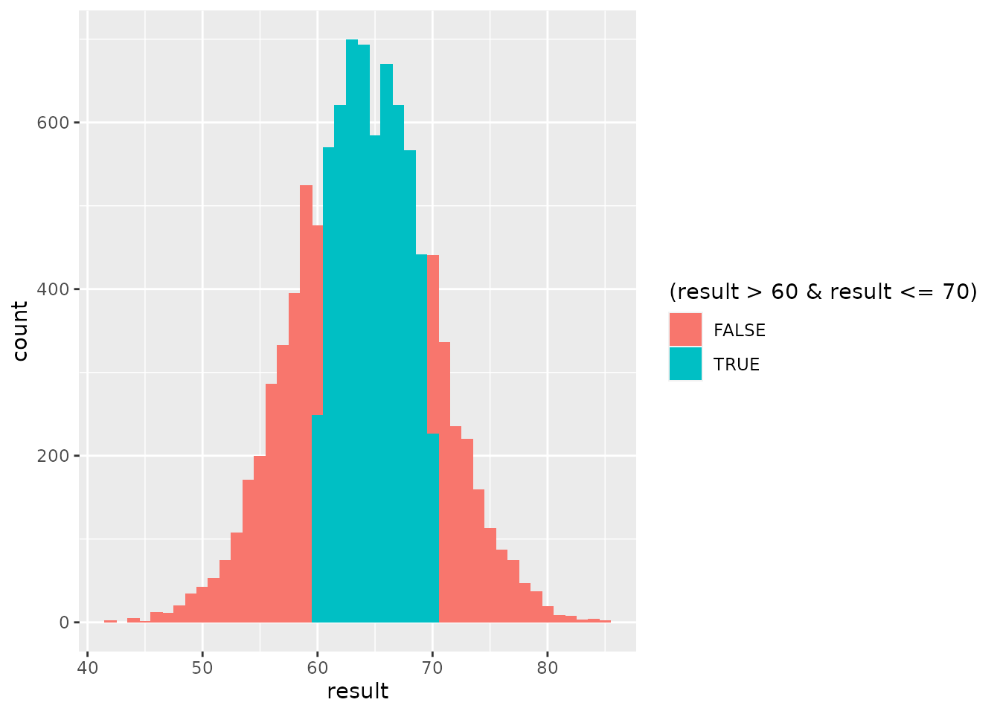
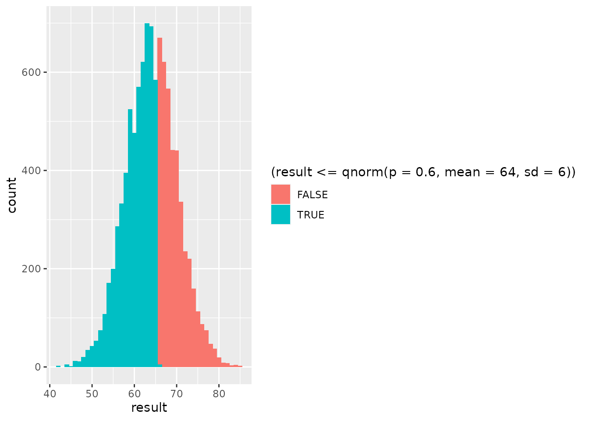
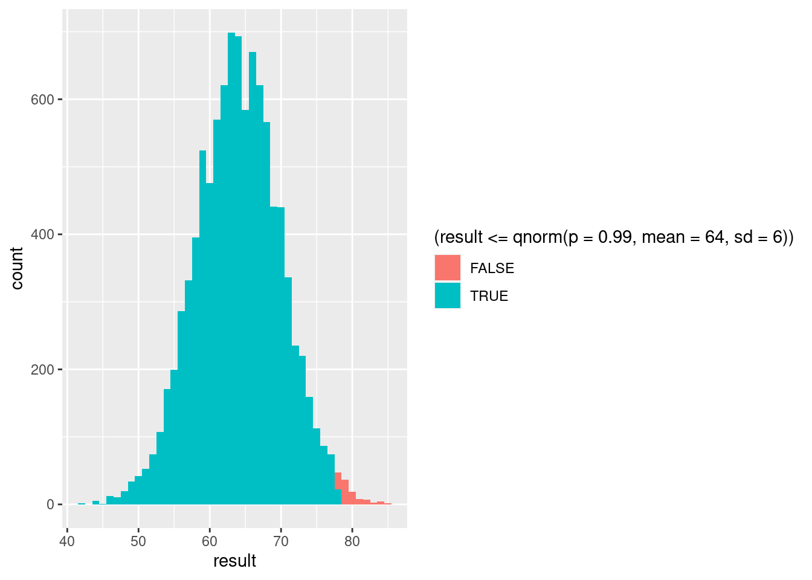

Lab 5 Models: The Binomial and the Normal
One of the ways we use statistics to learn about the world beyond our data is by testing hypotheses. A statistical hypothesis takes the form of a model. The model allows us to figure out the probability of observing particular types of outcomes. We can then take the types of outcomes we actually observed in our data and see whether they have high or low probability according to our model. If they have a high probability, our hypothesis might be reasonable. But if they have a low probability, there might be something wrong about our hypothesis.
In this session, we will explore two types of model that we have been discussing in class, the binomial distribution and the normal distribution. Similar to our last session, we will see how we can simulate data according to these models and show that, as we simulate more data (“in the long run…”), the relative frequency of different outcomes converges on the probabilities we get from the model.
As we’ve seen, we can use these distributions to model different scenarios by adjusting their parameters. These are the numbers that we feed into the distribution to get probabilities.
For the binomial distribution, its parameters are
- the probability of an outcome, which we called \(\theta\) in math language, but which we will call
probin R; and - the number of repetitions, which we labeled \(N\) in math language, but which we will call
sizein R.
For the normal distribution, its parameters are
- the mean, which we called \(\mu\) in math language, but which we will call
meanin R; and - the standard deviation, which we called \(\sigma\) in math language, but which we will call
sdin R.
Before we begin, let’s make sure we have the tidyverse package loaded from our library
library(tidyverse)## ── Attaching packages ─────────────────────────────────────── tidyverse 1.3.0 ──## ✓ ggplot2 3.3.3 ✓ purrr 0.3.4
## ✓ tibble 3.0.5 ✓ dplyr 1.0.3
## ✓ tidyr 1.1.2 ✓ stringr 1.4.0
## ✓ readr 1.4.0 ✓ forcats 0.5.0## ── Conflicts ────────────────────────────────────────── tidyverse_conflicts() ──
## x dplyr::filter() masks stats::filter()
## x dplyr::lag() masks stats::lag()5.1 The binomial distribution in R
Last time, we used R to simulate repeated outcomes from various kinds of events. Some of these, like flipping a coin or Kobe making a shot, had two possible outcomes. As a result, we can think of the number of times a particular outcome occurred as coming from a binomial distribution.
5.1.1 Translating from sample to rbinom
Let’s see how we can do some of the stuff we did last time using the binomial distribution instead of directly simulating the outcome of each event.
This is the code we used last time to simulate 1000 flips from a coin that had a probability of 0.6 of coming up heads:
result <- c("Heads", "Tails") %>%
sample(size = 1000, replace = TRUE, prob = c(0.6, 0.4))
coin_data <- tibble(result)
coin_data %>%
group_by(result) %>%
summarize(n=n()) %>%
mutate(p = n / sum(n))## # A tibble: 2 x 3
## result n p
## * <chr> <int> <dbl>
## 1 Heads 619 0.619
## 2 Tails 381 0.381We can use the number of flips (1000) and the probability of heads (0.6) as the parameters of the binomial distribution. R has several important distributions “built in,” including the binomial and normal. R provides functions that allow us to directly sample from those distributions without having to use the sample function explicitly.
This is how we can simulate the number of heads out of 1000 flips, where the probability of “heads” is 0.6, using R’s built-in binomial distribution:
rbinom(n = 1, prob = 0.6, size = 1000)## [1] 611It is definitely more concise than our old code!48 Notice that we had to add a thing n = 1, what’s up with that? Let’s try changing it to see what it does and maybe we’ll understand what n means here:
rbinom(n = 2, prob = 0.6, size = 1000)## [1] 575 592Okay, so n is actually the number of sequences of events to simulate. In other words, we have two “numbers of things” here: size is the number of repeated events in a single sequence; n is the number of sequences of events. Why is it important to distinguish between these two numbers? Let’s try an example to see.
5.1.2 Outcomes from different sequences of events
The Mets and the Yankees are well known rival baseball teams from New York City. On a semi-regular basis, these two teams play so-called “subway series,” which are sequences of six games played against each other. Imagine that the probability that the Yankees win any single game against the Mets is 0.57. There have been 8 “subway series” played so far as part of the regular season.
So in this scenario, the number of repeated event in a single sequence is 6, corresponding to the 6 games played in each subway series. The number of sequences is 8, corresponding to the 8 subway series that have been played. And the probability of a Yankees win in any single game is 0.57. We can use this to simulate the number of games won by the Yankees in each of the 8 subway series:
rbinom(n = 8, prob = 0.57, size = 6)## [1] 3 3 2 4 3 5 2 3Each number that R gave us is a number of games won by the Yankees in a sequence of 6 games against the Mets. So the first number is the number of Yankees wins in the first subway series, the second number is the number of Yankees wins in the second subway series, and so on.
Of course, if we run the simulation again, we will probably get a different set of outcomes for each subway series:
rbinom(n = 8, prob = 0.57, size = 6)## [1] 4 6 4 4 2 1 3 55.1.3 Simulated relative frequencies and probabilities
Now let’s imagine playing a large number of subway series over the next several decades or centuries, say, 1000 of them. Like last time with 1000 coin flips, this is too many to be able to see all at once. And because this is a simulation, we can’t just run the same line of code again and expect it to give us the same result. So let’s get R to remember the outcomes of 1000 subway series.
result <- rbinom(n = 1000, prob = 0.57, size = 6)Now let’s do the same trick we did last time so we can get R to treat our simulated results as data. We turn our simulation into a “tibble”:
subway_series <- tibble(result)Finally, let’s modify our code for making a frequency/probability table above to take a look at the distribution of outcomes for the 1000 subway series we simulated49:
subway_series %>%
group_by(result) %>%
summarize(n=n()) %>%
mutate(p = n / sum(n))## # A tibble: 7 x 3
## result n p
## * <int> <int> <dbl>
## 1 0 7 0.007
## 2 1 42 0.042
## 3 2 176 0.176
## 4 3 288 0.288
## 5 4 290 0.290
## 6 5 164 0.164
## 7 6 33 0.033Sometimes the outcome is a tie (3 games out of 6), sometimes the Yankees win the majority of games, and sometimes the Mets win the majority (when the Yankees win fewer than 3 games). The important thing to note is that these are probabilities of a number of wins out of a sequence of games, not the probability of winning any single game. In other words, the sample space is not just win/lose, it is the number of wins out of 6 games50.
5.1.4 Calculating binomial probabilities directly
When we were simulating outcomes last time, we directly specified the probability of each outcome in the sample space. Now, what we specify are parameters, namely, the probability of an outcome in a single event and the number of repetitions of the event. So if we want to know the probability of a specific outcome, like 3 wins out of 6, we need to use the binomial distribution to figure it out.
R lets us do this for single outcomes with the dbinom function. For example, let’s find the probability of a tie51
dbinom(x = 3, prob = 0.57, size = 6)## [1] 0.2944828As we would expect, this is close to the relative frequency of a tie when we simulated 1000 subway series. The meaning of probability is the same—it is the long-run relative frequency—it’s just that we are asking about the probability of a different type of outcome.
We can also ask what is the probability that the Yankees win all six games52
## [1] 0.034296455.1.5 Cumulative probabilities with the binomial
Another part of R’s built-in binomial distribution is the ability to calculate cumulative probabilities. For example, we might be interested in the probability that the Mets win a majority of the games in a subway series. This corresponds to the Yankees winning either 0, 1, or 2 games.
One way to calculate this would be to add up each of those individual probabilities:
dbinom(x = 0, prob = 0.57, size = 6) + dbinom(x = 1, prob = 0.57, size = 6) + dbinom(x = 2, prob = 0.57, size = 6)## [1] 0.2232135But a more efficient way to do this is to use cumulative probabilities. As we’ve seen, a cumulative probability is just the sum of the probabilities for all outcomes up to and including a given value. We can get the same result that we got above using this more compact bit of code:
pbinom(q = 2, prob = 0.57, size = 6)## [1] 0.2232135This makes it easier to find the probabilities for ranges of different outcomes. For example, we could get the probability that the Yankees either lose the series or tie it up (so 0, 1, 2, or 3 wins out of 6)53:
## [1] 0.5176963But what if the opposite happens? What if the Yankees neither lose nor tie? That means they must have won the majority of games in the series (i.e., 4, 5, or 6 games). We could figure out the probability that the Yankees win the majority of games by adding up those individual probabilities like so:
dbinom(x = 4, prob = 0.57, size = 6) + dbinom(x = 5, prob = 0.57, size = 6) + dbinom(x = 6, prob = 0.57, size = 6)## [1] 0.4823037But using cumulative probability, we can reverse that question: What is the probability that the Yankees don’t win 3 or fewer games? In other words, how much probability is “left over” after asking whether the Yankees win 3 or fewer games? Since the probability across all outcomes has to add up to one, we get
1 - pbinom(q = 3, prob = 0.57, size = 6)## [1] 0.4823037Using the same logic, we can ask what is the probability that the Yankees win 5 or more games54:
## [1] 0.1895335.1.6 Summary of R’s built-in binomial distribution
R makes it easy to use the binomial distribution by giving us several useful functions. We can summarize these below:
| Code | Meaning |
|---|---|
rbinom(n = ?, prob = ?, size = ?) |
Simulate n sequences of size events, where the probability of an outcome of interest is prob. For each of the n sequences, return the number of times out of size that the outcome of interest occurred. |
dbinom(x = ?, prob = ?, size = ?) |
What is the probability that an outcome of interest occurs exactly x times out of a sequence of size repeated events, if the probability that the outcome occurs in a single event is prob? |
pbinom(q = ?, prob = ?, size = ?) |
What is the probability that an outcome of interest occurs q or fewer times out of a sequence of size repeated events, if the probability that the outcome occurs in a single event is prob? |
5.2 The normal distribution in R
Just like the binomial distribution lets us model situations where we have a sequence of repeated events, each of which has two possible outcomes, the normal distribution lets us model situations where we have a continuous outcome that has a certain mean and standard deviation.
5.2.1 Simulating outcomes from a normal distribution
Just like we can simulate values from a binomial distribution using rbinom, we can simulate values from a normal distribution using rnorm.
Adult women in the US have an average height of about 64 inches, with a standard deviation of 6 inches. These are the two parameters that we need for our normal distribution. Using these parameters, let’s imagine that we pick a random adult American women. How tall is she?55
rnorm(n = 1, mean = 64, sd = 6)## [1] 66.93144Now let’s pick 10 adult women at random and see how tall they are56
## [1] 67.96766 61.54070 51.18494 69.00817 71.16475 66.77840 65.02384 67.07920
## [9] 55.20665 60.07779Each of those numbers represents the height of a simulated adult American woman. We can also get the heights for simulated adult American men by remembering that their mean height is 69 inches with a standard deviation again of 6 inches57
## [1] 68.18499 64.88364 67.25053 75.90296 71.39535 67.54149 63.06030 69.86670
## [9] 70.03507 80.95467Eyeballing it, it does seem like those simulated men tend to be taller than our simulated women.58
Now let’s try simulating the heights of 10,000 women using our normal distribution model. To do this, let’s first try doing what we did above to simulate outcomes of subway series, just swapping out the very first line of code:
result <- rnorm(n = 10000, mean = 64, sd = 6)
height_data <- tibble(result)
height_data %>%
group_by(result) %>%
summarize(n=n()) %>%
mutate(p = n / sum(n))## # A tibble: 10,000 x 3
## result n p
## * <dbl> <int> <dbl>
## 1 41.1 1 0.0001
## 2 43.1 1 0.0001
## 3 43.2 1 0.0001
## 4 43.5 1 0.0001
## 5 44.0 1 0.0001
## 6 44.4 1 0.0001
## 7 44.5 1 0.0001
## 8 44.9 1 0.0001
## 9 44.9 1 0.0001
## 10 45.3 1 0.0001
## # … with 9,990 more rowsWell that didn’t work very well at all! This illustrates the challenge of working with a continuous variable as opposed to a discrete one like number of games won. Every observed value is unique, so it occurs with a frequency of one. Luckily, we’ve already seen that histograms make it easy to visualize the relative frequencies of outcomes on continuous variables because they group together the outcomes into bins.
height_data %>%
ggplot(aes(x=result)) +
geom_histogram(binwidth = 1)
Now we are beginning to see that classic bell curve shape: There are more values around the mean (64 inches) than farther from the mean, but it is still possible to get a few folks who are particularly tall (like Allison Janney) or short (like Kristen Chenoweth).
5.2.2 The mean and standard deviation
The parameters of the normal distribution are its mean and standard deviation, which determine its center and spread, respectively. These parameters are also what you will tend to get if you summarize the central tendency and variability of samples from a normal distribution. This is one of the awesome things about the normal distribution—its parameters tell you exactly what you should expect your data to look like.
Let’s see that by summarizing the mean and standard deviation of the heights of our 1000 simulated women:
height_data %>%
summarize(M = mean(result), S = sd(result))## # A tibble: 1 x 2
## M S
## <dbl> <dbl>
## 1 64.0 6.04They may not be exactly 64 and 6, but they are pretty close. In fact, let’s simulate another group of 10,000 women and summarize their heights.
result <- rnorm(n = 10000, mean = 64, sd = 6)
height_data <- tibble(result)
height_data %>%
summarize(M = mean(result), S = sd(result))## # A tibble: 1 x 2
## M S
## <dbl> <dbl>
## 1 64.0 5.95Again, pretty close to the parameters we used!
5.2.3 Calculating probabilities with the normal distribution
Remember that we used the dbinom function in R to find the probability of a specific outcome in a sequence of repeated binary events. There is an analogous function in R for the normal distribution called dnorm, but we won’t really ever use it. The reason is the same as why our original attempt to make a frequency table didn’t really work: With a continuous variable, the probability of observing any single value is basically zero.
Instead, we will follow the same line of reasoning that makes the histogram useful: For continuous variables, we aren’t interested in whether they take some specific value, but whether they fall into a particular “bin.” We don’t care if someone is exactly 71.05976… inches tall. We care whether they are, for example, between 71 and 72 inches tall. Or whether they are more than 64 inches tall. Or whether they are less than 80 inches tall.
The probabilities of all of those kinds of things can be found by doing some clever tricks with cumulative probability. Remember that this is the probability of observing a value that is less than or equal to some given cutoff. This was how we figured out the probabilities of different numbers of wins. Now we can do the same for different ranges of height.
Just like we had pbinom for cumulative probability, we also have pnorm. This code gives us the probability that a woman is less than or equal to 60 inches tall:
pnorm(q = 60, mean = 64, sd = 6)## [1] 0.2524925This is awesome! But it doesn’t quite make clear where this probability is coming from. Let’s look back at our histogram of simulated heights, but now make it so that bars corresponding to heights less than 60 are filled with a different color:
height_data %>%
ggplot(aes(x = result, fill = (result <= 60))) +
geom_histogram(binwidth = 1)
What pnorm is doing is telling us is the area of the histogram that is colored teal (for being less than or equal to 60). But this immediately suggests that we can use pnorm to find the area colored red (for being more than 60). We know that probabilities have to add up to 1, so the area across all the bars of the histogram equals 1. So if we know the area for one color, we can figure out the area for the other because we know that, together, they have to add up to 1. That gives us all we need to figure out the probability that a woman is more than 60 inches tall59:
## [1] 0.7475075Cumulative probability also lets us figure out the probability that a woman is, say, between 60 and 70 inches tall. The insight is that the probability that a woman is less than or equal to 70 inches “contains” the probability that a woman is less than or equal to 60 inches. So to find the probability we need to subtract out that overlap.
pnorm(q = 70, mean = 64, sd = 6) - pnorm(q = 60, mean = 64, sd = 6)## [1] 0.5888522Let’s make a colored histogram again to get a better sense of what is going on here
height_data %>%
ggplot(aes(x = result, fill = (result > 60 & result <= 70))) +
geom_histogram(binwidth = 1)
Again, we are finding the area that is in the teal part of the histogram, corresponding to women between 60 and 70 inches tall.
Using that same logic, we can figure out the probability that a woman is between 71 and 72 inches tall60:
## [1] 0.030461285.2.4 Finding “quantiles” with the normal distribution
There’s one final trick we will explore about the normal distribution. Above, we saw how we could find the probability of observing a value that was less than or equal to a given cutoff. The cutoff value is typically called a “quantile”, hence why pbinom and pnorm label it q. But we can also turn that question around: What is the quantile for which there is a specific probability of being less than that value? In other words, if we know the cumulative probability is \(p\), what must \(q\) be?
We can answer that kind of question in R using the qnorm function for normal distributions (there is also a qbinom function for binomial distributions, but we won’t typically use it). What is the height for which a woman has a 0.6 probability of being shorter than that height?
qnorm(p = 0.6, mean = 64, sd = 6)## [1] 65.52008Again, let’s try making ourselves a colored histogram to understand what this answer means.
height_data %>%
ggplot(aes(x = result, fill = (result <= qnorm(p = 0.6, mean = 64, sd = 6)))) +
geom_histogram(binwidth = 1)
Notice that for the fill aesthetic, we’ve just swapped out a number we picked ahead of time (like 60) for the qnorm line from above. It looks like a bit more than half of the histogram is colored teal. This corresponds to the 0.6 probability associated with the quantile we found.
Things will look quite a bit different if we ask what is the height for which a woman has a probability 0.99 of being shorter than that height?61
## [1] 77.95809Now if we make a colored histogram like we just did, it should look almost all teal, since there is such a large probability that a woman is shorter than the quantile we just found.

Recall that male heights have a mean of 69 inches. Do you think the quantile corresponding to a probability of 0.99 will be higher for men than women? Try it and see!62
## [1] 82.958095.2.5 Summary of R’s built-in normal distribution
| Code | Meaning |
|---|---|
rnorm(n = ?, mean = ?, sd = ?) |
Simulate n samples from a normal distribution with a given mean and standard deviation (sd). |
pnorm(q = ?, mean = ?, sd = ?) |
What is the probability of observing a value less than or equal to q if values come from a normal distribution with the given mean and standard deviation (sd)? |
qnorm(p = ?, mean = ?, sd = ?) |
What is the value (“quantile”) for which there is a probability p of observing a value that is less than or equal to that value, if the value comes from a normal distribution with the given mean and standard deviation (sd)? |
5.3 Wrap-up
In this session we explored the functions built into R that allow us to use the binomial and normal distributions as “models” for various situations. We saw how we could describe a situation in terms of parameters and use R to simulate different outcomes, figure out probabilities of different types of outcomes, and for the normal distribution, how to find “quantiles” when we know the corresponding cumulative probability.
Notice that the
rbinomfunction also requires us to give it things namedprobandsize, like our old simulation code. How is the way we useprobandsizesimilar between the two pieces of code? How are they different?↩︎Describe what the 3 columns in the table (“result,” “n,” and “p”) each represent.↩︎
What parameter would you change in order to get the binomial distribution to describe probabilities of winning or losing a single game?↩︎
Compare the code for the
dbinomandrbinomfunctions. What is similar and what is different?↩︎What code would give us this probability?↩︎
How would we change the
pbinomcode to get this answer?↩︎What code would tell us the probability of the Yankees winning 5 or more games in a series?↩︎
Compare the code for
rnormto the code forrbinom. What is similar and what is different?↩︎What code would use the normal distribution to simulate the heights of 10 adult women?↩︎
What parameter of the normal distribution do we need to change in order to simulate adult male heights, rather than adult female heights?↩︎
When you simulated male and female heights, were there any women who were taller than at least one of the men? Why do you think this might be, even though men are on average taller than women?↩︎
What code did you use to find the probability that a woman is more than 60 inches tall?↩︎
What code did you use to find the probability that a woman is between 71 and 72 inches tall?↩︎
What code would answer this question?↩︎
What code did you use to find the 0.99 quantile for male heights? Hint: which parameter of the normal distribution is different for heights of men and women?↩︎